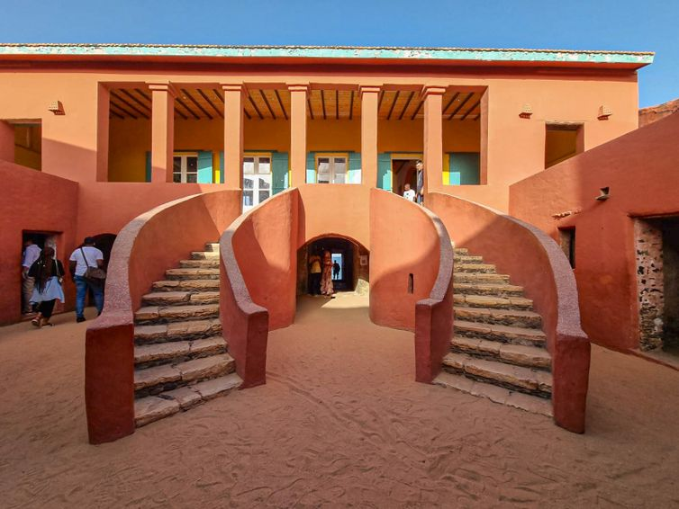
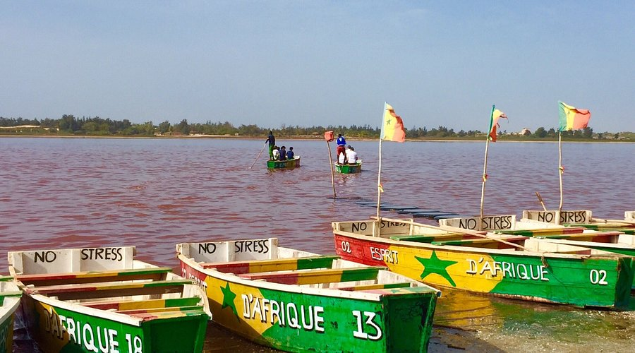
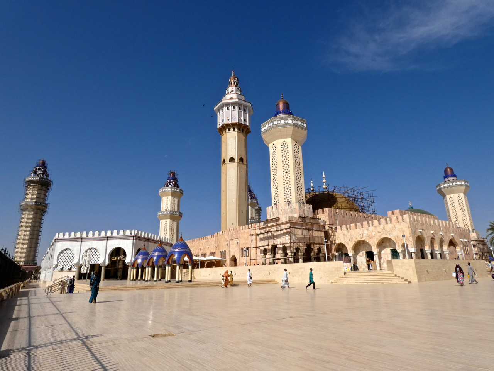

Imperdíveis
-

Ilha de GoréeCasa dos Escravos
A ilha, de casas coloridas, guarda a memória do tráfico de escravizados. É Patrimônio Mundial da UNESCO e fica a poucos minutos de balsa de Dakar.
-
Saint-Louis
Cidade histórica
Antiga capital colonial construída numa ilha do rio Senegal. Tem sacadas de ferro, ruas estreitas e a famosa ponte Faidherbe.
-

Perto de DakarLago Rosa (Retba)
A cor vem de uma alga que vive na água muito salgada. Os trabalhadores colhem o sal à mão, e dá para passear de barco.
-

ToubaGrande Mesquita
Centro da irmandade Mouride e abriga o túmulo de Cheikh Amadou Bamba. Seus minaretes se veem de longe, e a cidade recebe milhões de fiéis no Grand Magal.